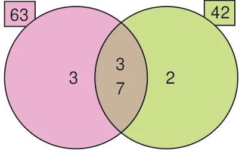
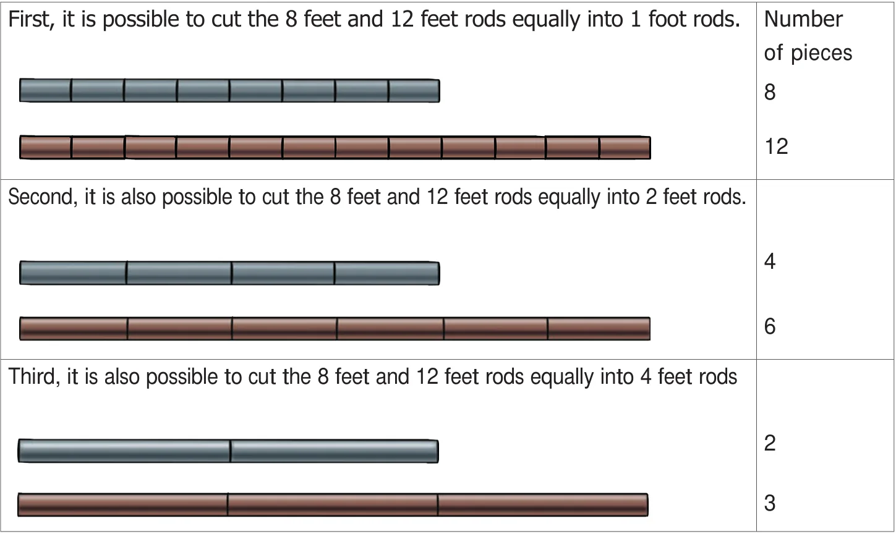
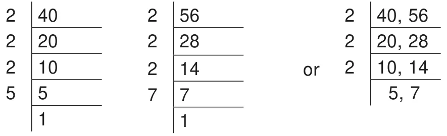
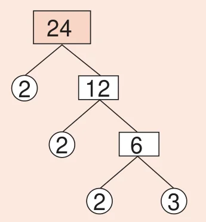

Consider the numbers 45 and 60. Use of divisibility tests will also help us to find the factors of 45 and 60. The factors of 45 are 1, 3, 5, 9, 15 and 45 and the factors of 60 are 1, 2, 3, 4, 5, 6, 10, 12, 15, 20, 30 and 60. Here, the common factors of 45 and 60 are 1, 3, 5 and 15.
As factors of a number are finite, we can think of the Highest Common Factor of numbers, shortly denoted as HCF.
1.5.1 Highest Common Factor (HCF)
Think about the situation:
Situation 1:
Pavithra plans to celebrate Deepavali at her home by distributing sweets and savouries to her relatives. Pavithra's mother gives her 63 athirasams and 42 murukkus. Each relative should be given the same number of athirasams and the same number of murukkus. What is the greatest number of relatives that she can distribute?
Now, Pavithra can tackle this situation by using HCF as given in the following illustration.
Illustration: Find the HCF of 63 and 42.
Solution: The prime factorisation of 63 is \(3 \times 3 \times 7\) and the prime factorisation of 42 is \(2 \times 3 \times 7\). We find that the common prime factors of 63 and 42 are 3 and 7 (see the diagram) and so the highest common factor is \(3 \times 7 =21\). So, Pavithra can distribute equal number of athirasams (3 for each relative) and murukkus (2 for each relative) for a maximum of 21 relatives.

Situation 2:
Consider the rods of length 8 feet and 12 feet. We have to cut these rods into pieces of equal length. How many pieces can we get? What will be the length of the longest piece that is common for both the rods?
The rod of 8 feet can be divided into small rods of length 1 foot or 2 feet or 4 feet (These are factors of 8). The rod of 12 feet can be divided into small rods of length 1 foot or 2 feet or 3 feet or 4 feet or 6 feet (These are factors of 12). This is represented as follows:

The length of the pieces that are common to both the rods (as given above) are of length 1 foot, 2 feet and 4 feet (i.e., common factors of 8 and 12).
Hence, the HCF of 8 and 12 is the length of the longest rod i.e., 4 feet that can be cut equally from the rods of length 8 feet and 12 feet.
So, the Highest Common Factor (HCF) of two numbers is the largest factor that is common to both of them. The Highest Common Factor of the numbers \(x\) and \(y\) can be written as HCF \((x, y)\).
Note
- The Highest Common Factor (HCF) is also called as the Greatest Common Divisor (GCD) or the Greatest Common Factor (GCF).
- HCF \((1, x) = 1\)
- HCF \((x, y) = x\), if \(y\) is a multiple of \(x\). For example, HCF \((3, 6) = 3\).
- If the HCF of two numbers is 1, then the numbers are said to be co-primes or relatively prime. Here, the two numbers can both be primes as \((5, 7)\) or both can be composites as \((14, 27)\) or one can be a prime and other a composite as \((11, 12)\).
Example 3: Find the HCF of the numbers 40 and 56 by division method.
Solution:

Prime factorisation of \(40 = 2 \times 2 \times 2 \times 5\)
Prime factorisation of \(56 = 2 \times 2 \times 2 \times 7\)
The product of common factors of 40 and 56
\(= 2 \times 2 \times 2 = 8\) and so, HCF \((40, 56) = 8\)
Dividing by the common factor 2,
(in 3 steps)
HCF = Product of common factors
\(= 2 \times 2 \times 2 = 8\)
Example 4: Find the HCF of the numbers 18, 24 and 30 by factor tree method.
Solution:
Let us find the factors of 18, 24 and 30 (use of divisibility test rules will also help).
The factors of 18 are 1, 2, 3, 6, 9 and 18.
The factors of 24 are 1, 2, 3, 4, 6, 8, 12 and 24.
The factors of 30 are 1, 2, 3, 5, 6, 10, 15 and 30.
The factors that are common to all the three given numbers are 1, 2, 3 and 6 of which 6 is the highest. Hence, HCF \((18, 24, 30) = 6\).
Note that 1 is a trivial factor of all numbers.
Let us find the factors of 24 by tree method.

Here, \(24 = 2 \times 2 \times 2 \times 3\)
Similarly, we can find the factors of 18 and 30.